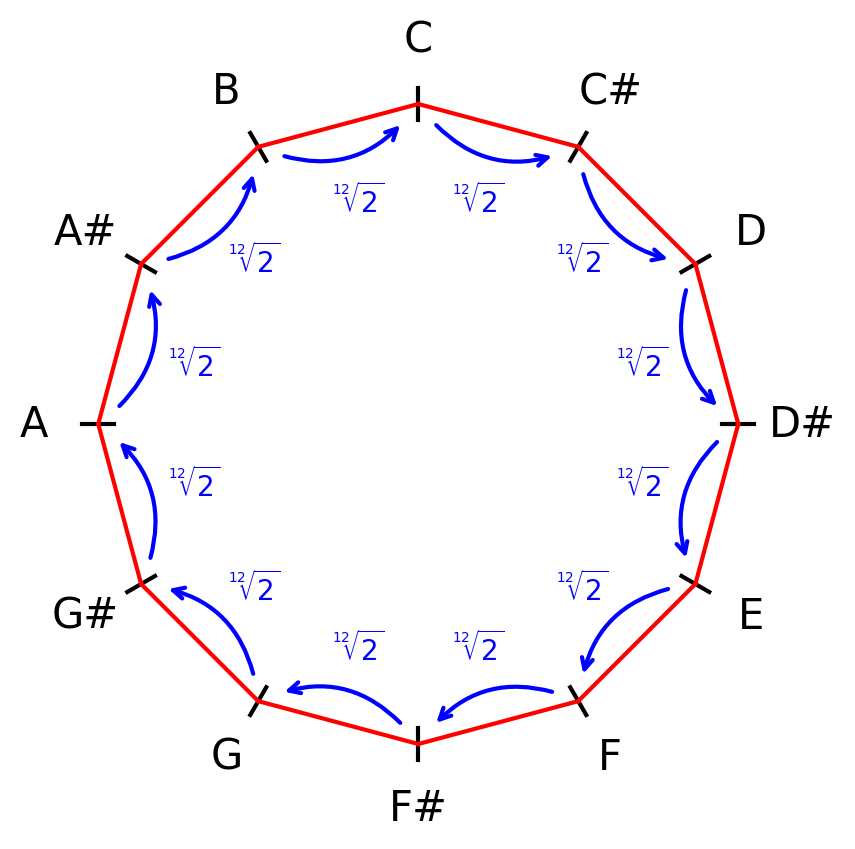
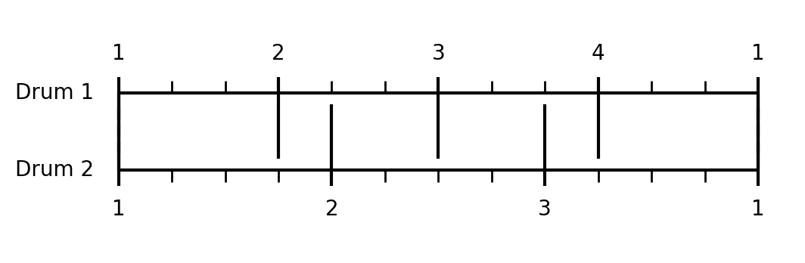
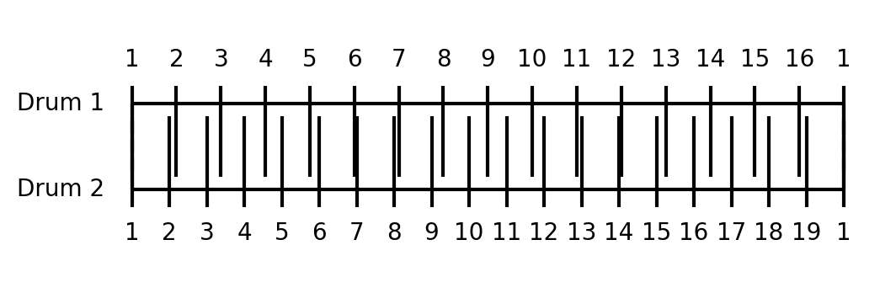
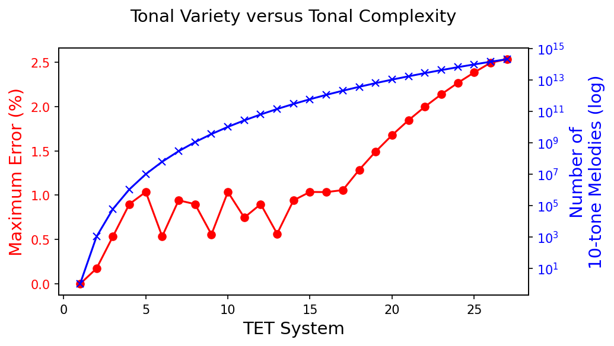

Tonal variety versus tonal complexity
In the world of music, tuning systems play a crucial role in shaping the sound and feel of a piece. Equal temperament tuning (TET), which divides an octave into a set number of equal steps, is one of the most widely used systems. However, the question arises: what is the optimal TET system for dividing the octave?
Ideally, we would hit the perfect balance between tonal variety (the number of notes available for creative expression) and tonal complexity (the accuracy of harmonic intervals). For example:
Smaller TET systems (like the 12-TET system we use in almost all modern music composition) are comparatively easy to tune and use, offering a manageable balance between variety and complexity. In a 12-TET system, an octave is divided into 12 equal intervals. To calculate the frequency difference between notes, each note is multiplied by the 12th root of 2.

Larger TET systems (like 19-TET or 27-TET) provide greater tonal variety but often at the price of greater harmonic inaccuracies. In a 19-TET system, an octave is divided into 19 equal intervals. To calculate the frequency difference between notes, each note is multiplied by the 19th root of 2.
Tonal variety
Tonal variety refers to the range of melodic possibilities within a given system. The more notes a system has, the more potential combinations exist for constructing melodies. For instance, a 10-tone melody in a 12-TET system can have 12^10 (61 billion) possible combinations. As we increase the number of divisions in the TET system, the number of possible melodies grows exponentially.
12-TET: ~ 61.9 billion melodies
19-TET: ~ 613.1 billion melodies
27-TET: ~ 205.8 trillion melodies
Tonal complexity
Tonal complexity refers to how accurately these divisions can approximate pure intervals, like perfect fifths or thirds, commonly found in natural harmonic systems. As TET systems increase their divisions, they may sacrifice the purity of intervals. For instance, the ratio of a perfect fifth (3:2) in a 12-TET system is an approximation, not an exact match.
Why does this matter? We tend to enjoy music when the frequency ratios between notes are simple, such as 3/2 for a perfect fifth or 4/3 for a perfect fourth. These low-number fractions are easy for our brains to process, creating a sense of consonance. When the ratios become more complex, such as 19/16, the intervals are harder to perceive harmonically, leading to dissonance.
To illustrate, the ease with which we comprehend these simple ratios is also evident in rhythm. For instance, a 3/4 polyrhythm (three beats played against four beats) is a very common, easy-to-follow rhythm because the two patterns meet up after only 12 beats (the least common multiple of 3 and 4). This allows the brain to recognize the repeating cycle quickly, making the rhythm feel natural and intuitive.

In contrast, a polyrhythm like 16/19 is much harder to grasp. The two patterns only meet up after 304 beats, making it extremely difficult for our brain to detect a repeating cycle. This is why rhythms like 16/19 are uncommon in most musical styles. Our brains simply struggle to comprehend them as musically pleasing or natural.

Let us examine how the 12-TET system compares in terms of the error it produces when approximating simple fractional relationships between two notes. We will limit these fractions to a maximum numerator and denominator of 20. This already pushes tonal complexity, as it would take a musical genius to appreciate a ratio like 16/19 (which would fall within the 20/20 range). Moreover, as we will see, 12-TET does not exactly match these fractions to begin with.
| Interval |
Interval Ratio |
Nearest Low Fraction |
Error (%) |
| A → A |
1 |
1/1 |
0.00% |
| A → A♯ |
1.0595 |
18/17 |
0.06% |
| A → B |
1.1225 |
9/8 |
0.23% |
| A → C |
1.1892 |
19/16 |
0.14% |
| A → C♯ |
1.2599 |
19/15 |
0.54% |
| A → D |
1.3348 |
4/3 |
0.11% |
| A → D♯ |
1.4142 |
17/12 |
0.17% |
| A → E |
1.4983 |
3/2 |
0.11% |
| A → F |
1.5874 |
19/12 |
0.26% |
| A → F♯ |
1.6818 |
5/3 |
0.90% |
| A → G |
1.7818 |
16/9 |
0.23% |
| A → G♯ |
1.8877 |
17/9 |
0.06% |
| A → A2 |
2 |
2/1 |
0.00% |
In the 12-TET system shown, the maximum error is 0.9% for the interval between A and F♯. This means, assuming our brain finds all fractions within 20/20 harmonious, the most "out of tune" we experience is a small deviation of 0.9% from a fraction we can naturally perceive as beautiful.
Balanced TET systems
To find the optimal TET system, we calculate the maximum error in tonal intervals across various TET systems and the number of different 10-tone melodies we can create with that TET system. This helps us identify the point where increased tonal complexity outweighs the benefit of additional tonal variety.

As we can see, there is a point where the maximum error starts to spike. Past this point, we have to ask ourselves if the extra tonal variety is worth the added dissonance? What I have not shown above, is that the number of errors exceeding 1% (associated with more dissonant interval ratios) also rises as the TET system increases. The analysis is, however, included in the code provided under the materials section.
As a bonus for making it this far,
here is a YouTube video of a piece written in 19-TET.